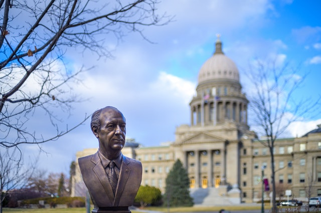
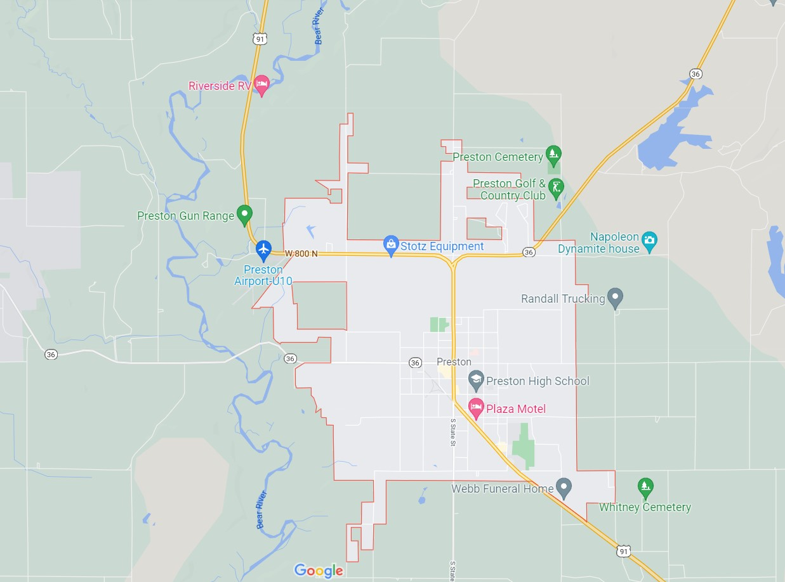

Five Day Forecast
- °F
- °F
- °F
- °F
- °F

History
In 1866, Latter-day Saint (LDS, or Mormon) pioneers arrived in the northern end of the Cache Valley, stretching across southeastern Idaho and northeastern Utah. They founded a community in that location and named it Worm Creek, but in 1881 changed it to Preston because leaders of the LDS Church in Salt Lake City objected to the name "Worm Creek" being part of any church congregation's name.[6][7] The name Preston was suggested by a local member to honor William B. Preston, who at the time was president of the LDS Church's Cache Stake...(click here to read the full article on wikipedia)

Contact us on: